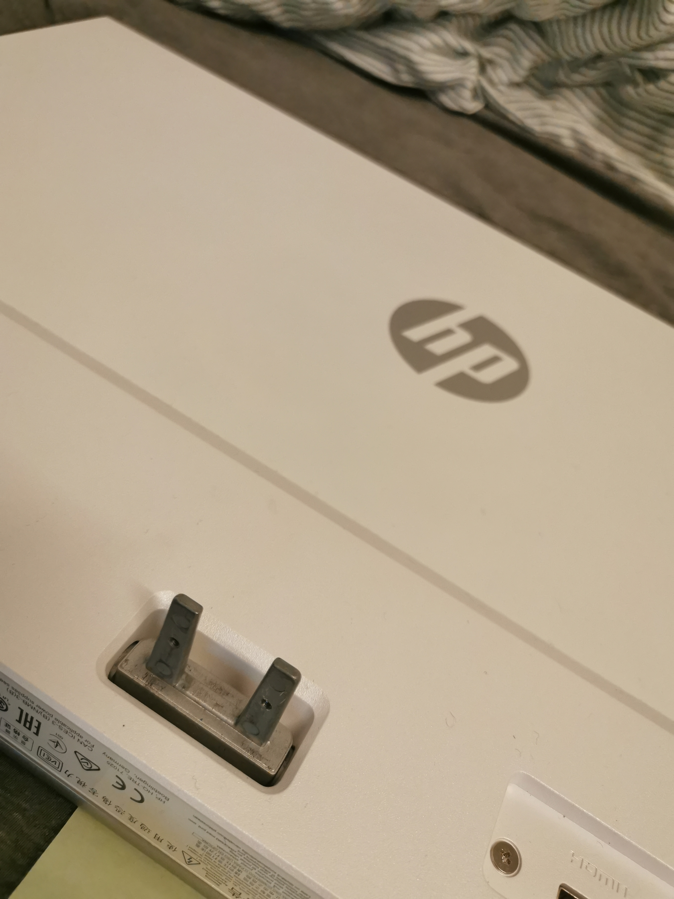

Feste til skjermen
Jeg har et skjermstativ for å holde alle pc skjermene mine på skrivebordet mitt. Stativet har bare vesa 100 og vesa 75 feste, så for å kunne montere opp hp skjermen så trengte jeg en adapter.
Jeg har et skjermstativ for å holde alle pc skjermene mine på skrivebordet mitt. Stativet har bare vesa 100 og vesa 75 feste, så for å kunne montere opp hp skjermen så trengte jeg en adapter.

Jeg har designet en adapter i fusion 360 som jeg så har 3D printet slik at skjermen passer til vesa feste. Jeg valgte å bruke PETG filament siden det tåler varmen som skjermen avgir og siden det er et sterkt materiale.
Designet den slik at det gamle festet kommer på siden av vesa festet, slik at skjermen kommer lengst mulig bak. I tillegg har jeg laget hull som passer til skruehullene på skjermen, som har en vinkel på 82 grader.